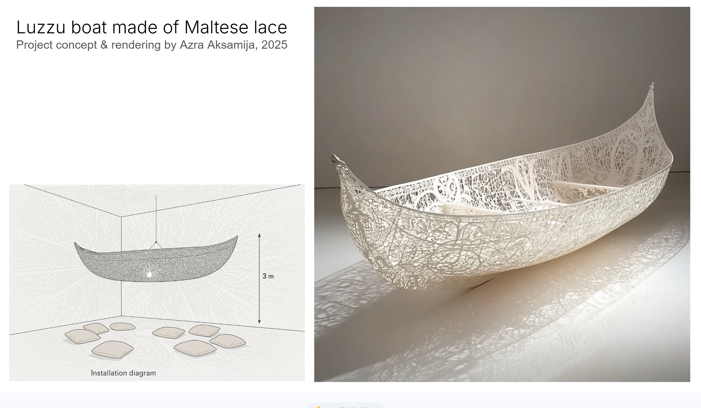

MATERIAL, MEMORY & NEGATIVE SPACE
A language
of openings.
Look closely. Find a rule. Grow something new.
A study of lace, from a single motif to a living surface.
01 / PATTERN STUDIO
One variable. A different possibility.Select the rules on the right, then generate your own study.
PINNED STUDIES
This session onlyView the generation recipe +
A NOTE ON THE METHOD
The image is a hypothesis.
Change one rule at a time. Compare motif, repeat and ground against your intention. Then take the result into Image study.
02 / THE PATTERN ATLAS
Read the lace.
Historical specimens, seen through four lenses.
Motif. Repeat. Ground. Edge.
Museum titles, dates and materials follow the linked collection records. Pattern readings are working observations, not museum classifications. Cleveland images are CC0; Met and Smithsonian images are Public Domain.
Project context — from lace to a boat +

PROJECT CONCEPT / 2025
Luzzu boat made of Maltese lace
Concept and rendering by Azra Aksamija, as credited on the supplied image. This is the team’s project reference, not a documented completed installation.
First study the flat pattern. Later test scale, connected material and continuity across the hull. Material and fabrication method remain open.
03 / CLOSE OBSERVATION
Look between
the threads.
Separate material from opening. Test a visual assumption.
Image analysis happens on this device.
A closer look starts here.
Import a flat, front-facing crop of lace.
PNG, JPEG or WebP · up to 20 MB